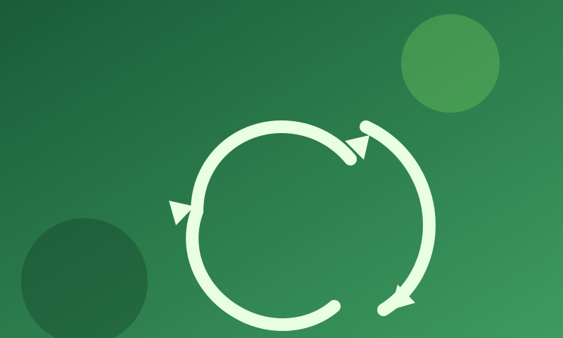
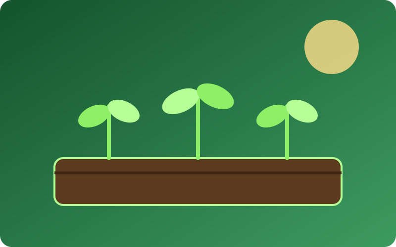
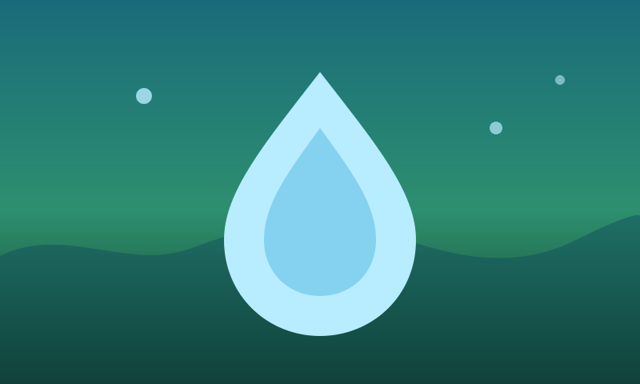

Mobilização no Bairro
1. Mutirão de Coleta Seletiva e Ecoponto
Organização de campanhas mensais entre vizinhos para separar recicláveis secos, arrecadar óleo de cozinha usado e encaminhar resíduos diretamente para cooperativas de catadores locais.
Como começar: defina um ponto fixo no condomínio ou rua e divulgue um calendário simples com os dias de coleta.

Segurança Alimentar & Educação
2. Horta Comunitária e Compostagem Escolar
Aproveitamento de terrenos ociosos, pátios escolares ou jardineiras coletivas para o cultivo sem agrotóxicos de hortaliças, ervas aromáticas e temperos, utilizando composto orgânico produzido no próprio local.
Como começar: inicie com ervas resistentes (manjericão, cebolinha, hortelã) em caixas ou canteiros elevados.

Preservação Hídrica
3. Guardiões da Água e Captação de Chuva
Projeto voltado à identificação de desperdícios em escolas e prédios, instalação de cisternas simples com bombonas para captar água da calha e uso racional em jardins e lavagem de pisos.
Como começar: faça uma vistoria coletiva em torneiras e descargas e sinalize dicas de economia nos banheiros.
 Cultura e Cidadania
Cultura e Cidadania
4. Rodas de Educação Ambiental e Troca Solidária
Encontros em escolas, bibliotecas ou centros comunitários com feiras de troca de livros, brinquedos e roupas em bom estado, incentivando a economia circular e reduzindo o descarte precoce.
Como começar: promova um sábado de troca solidária associado a uma oficina rápida de separação de resíduos.